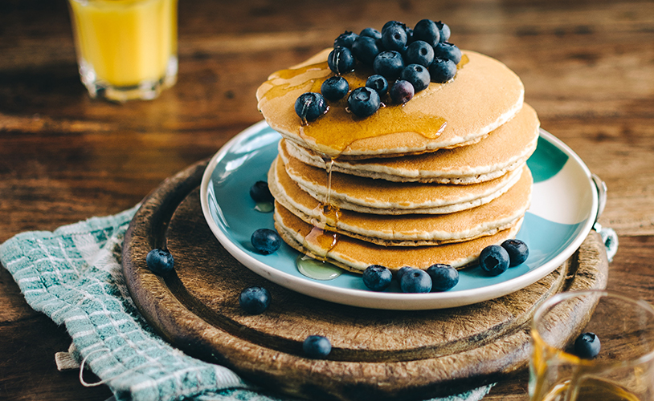
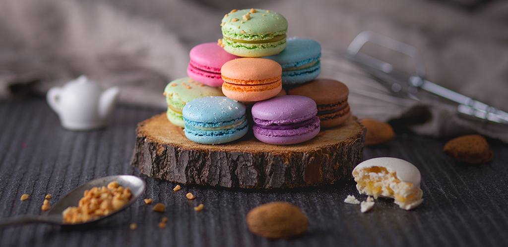

Creating tasties is something I've done ever since I can remember; watching my mum bake cakes & assisting with the ever important licking of the bowl. When I got older I started experimenting more with flavours and starting to alter recipes I found online until I was eventually just writing them for myself. Here I share with you my favourite creations.